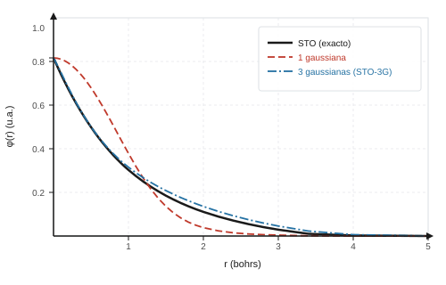

Funciones de base#
Introducción#
Los orbitales atómicos y moleculares de sistemas polielectrónicos presentan formas espaciales continuas que no admiten soluciones analíticas simples. Para representarlos computacionalmente, empleamos conjuntos de funciones matemáticas conocidas (generalmente combinaciones de gaussianas) denominadas funciones de base. La elección de la base en Gaussian determina la flexibilidad numérica para modelar la nube electrónica e influye directamente tanto en la precisión física del resultado como en el tiempo de cálculo necesario.
La idea central: aproximar orbitales con funciones conocidas#
En química cuántica computacional, los orbitales moleculares se representan como combinaciones lineales de un conjunto finito de funciones conocidas denominadas funciones de base. Las funciones gaussianas constituyen el estándar en programas como Gaussian porque permiten calcular con gran rapidez analítica las integrales de atracción y repulsión. Al aumentar el número de funciones en el conjunto, mejora la capacidad numérica para describir la densidad electrónica con precisión. Por tanto, elegir el conjunto de base exige un equilibrio continuo entre la exactitud física deseada y el coste computacional disponible.


Precisión vs coste computacional#
El tamaño del conjunto de base fija el límite de precisión física que puede alcanzar un cálculo. Al aumentar el número de funciones por átomo se describe con mayor fidelidad la distribución electrónica, pero el tiempo de cálculo y el consumo de memoria crecen sustancialmente. La tabla siguiente ilustra esta tendencia cualitativa mediante dos bases frecuentes: STO-3G (base mínima, rápida pero aproximada) y 6-311G (base extendida, más precisa y costosa). En el guión de cada práctica indicamos qué conjunto de base usar en GaussView.
Base |
Tamaño relativo |
Coste relativo |
|---|---|---|
STO-3G |
Pequeña |
Bajo |
6-311G |
Mayor |
Mayor |
Bibliografía#
Gaussian 16, Revision A.03, M. J. Frisch, G. W. Trucks, H. B. Schlegel et al., Gaussian, Inc., Wallingford CT, 2016.
Szabo, A.; Ostlund, N. S. Modern Quantum Chemistry. Dover, 1996.
Qué significa la notación: 6-31G, 6-311G y funciones de polarización
En la notación de bases de valencia dividida de Pople, los dígitos indican cuántas funciones gaussianas primitivas componen cada orbital interno y de valencia. Por ejemplo, en la base 6-311G se contraen seis gaussianas para cada orbital de las capas internas, mientras que la capa de valencia se divide en tres funciones formadas por contracciones de tres, una y una gaussiana. El asterisco o sufijo * denota la adición de funciones de polarización (de tipo d sobre átomos distintos del hidrógeno), que aportan flexibilidad angular para describir las deformaciones de la densidad electrónica al formarse el enlace químico. En GaussView, el conjunto completo se selecciona en el menú desplegable de la pestaña Method.